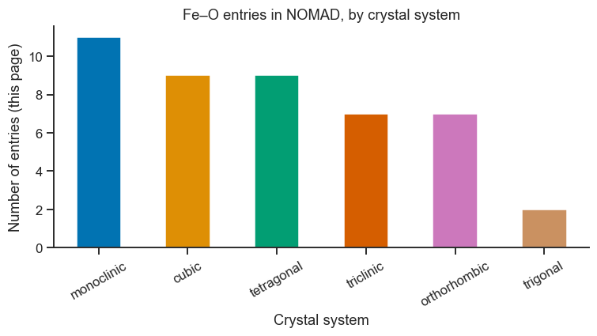
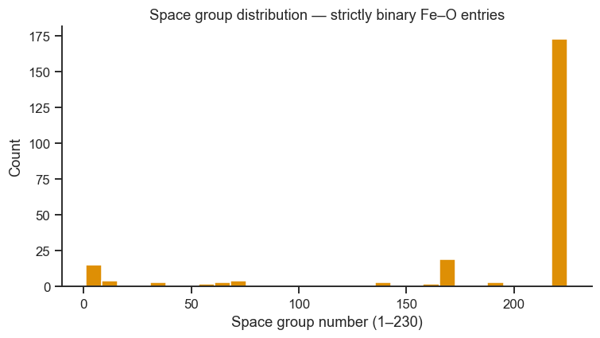
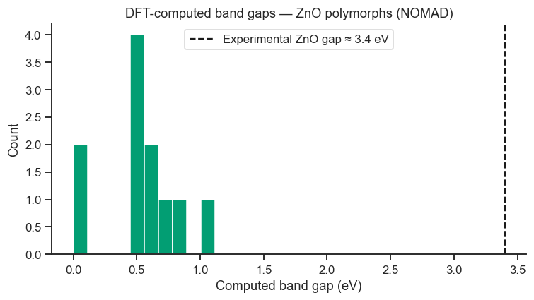

7. Live Tutorial 2: Querying and Plotting Real NOMAD Data#
Notebooks 1–5 built the concepts — FAIR metadata, EMMO, and NOMAD’s data
model — using local Python so nothing depended on network access, and
Notebook 6 turned those concepts into a live, hands-on SQL/NoSQL
investigation of your own local data. This notebook is a second live
session, and the payoff specifically for NOMAD: we connect to the real,
public NOMAD repository at nomad-lab.eu and use it exactly the way you
would for a real project — searching, paginating, extracting numeric
properties, and plotting the results with the tools from Part I
(pandas, matplotlib, seaborn).
Read the explanation, run the cell, look at the output, then do the linked exercise before moving on. Every cell that talks to the network is guarded so the notebook degrades gracefully (with a clear message) if you lose your connection mid-session — re-run the guard cell in Section 7.1 to reconnect.
Topics
Do you need an API key? (short answer: not for this)
Your first request: a URL you can paste into a browser
A structured search with
POST /entries/query, and your first plotUnderstanding query semantics (
allvsany)Paginating through thousands of results
From a search hit to one full record
Numeric properties done right: band gaps and unit conversion
Personal Access Tokens: NOMAD’s API key, and what it unlocks
Summary: anonymous vs. authenticated
7.1 Do You Need an API Key?#
No — not for reading published data. NOMAD’s central repository is built around open science: anyone can query and download published entries anonymously, with no account, no registration, and no API key. You only need credentials for things that are inherently personal or private — uploading data, seeing your own unpublished entries, or acting as a specific user. Section 7.8 covers that; everything before it works for absolutely anyone.
Run the cell below once now. It checks connectivity and sets a flag,
NOMAD_ONLINE, that every later cell checks before making a request — if
your connection drops partway through the session, just re-run this cell
to pick up again without re-running everything above it.
import requests
BASE_URL = 'https://nomad-lab.eu/prod/v1/api/v1'
def check_nomad_online(attempts=3, timeout=30):
"""The very first request to a server can be slow (cold connection,
DNS, TLS handshake) — retry a couple of times before giving up."""
for _ in range(attempts):
try:
r = requests.get(f'{BASE_URL}/info', timeout=timeout)
if r.status_code == 200:
return True
except requests.exceptions.RequestException:
pass
return False
NOMAD_ONLINE = check_nomad_online()
if NOMAD_ONLINE:
print('Connected to NOMAD — no API key was sent, and none was required.')
else:
print('Could not reach NOMAD right now. Check your connection and re-run this cell')
print('before continuing — every later cell depends on NOMAD_ONLINE.')
Connected to NOMAD — no API key was sent, and none was required.
7.2 Your First Request: Just a URL#
The simplest NOMAD search is a plain GET request with query parameters —
exactly the kind of URL you could paste into a browser address bar and get
JSON back. requests.get does the same thing from Python. Let’s ask for
entries containing iron (the same element used as the running example in
Notebooks 1–4, and in the Materials Project examples in the
course project guide — the same chemical
system, two different repositories).
if NOMAD_ONLINE:
r = requests.get(f'{BASE_URL}/entries', params={
'results.material.elements': 'Fe',
'page_size': 3,
})
print('Status code:', r.status_code)
print('You could paste this straight into a browser:')
print(' ', r.json()['pagination']['page_url'])
print()
print('Total entries containing iron in all of NOMAD:',
f"{r.json()['pagination']['total']:,}")
Status code: 200
You could paste this straight into a browser:
https://nomad-lab.eu/prod/v1/api/v1/entries?results.material.elements=Fe&page_size=3
Total entries containing iron in all of NOMAD: 759,366
7.3 A Structured Search with POST /entries/query#
The GET /entries endpoint above is fine for a single filter, but real
searches usually need several conditions and specific fields back —
NOMAD’s POST /entries/query endpoint takes a JSON request body
instead of URL parameters, which scales much better. It has three parts,
which you will reuse for the rest of this notebook:
query— which entries to match (like aWHEREclause)pagination— how many results per page (page_size), and where to resume (Section 7.5)required— which fields to actually return (required.include) — without this, NOMAD returns a large default set of fields you usually don’t need
Let’s search for materials containing both iron and oxygen, and pull back just the fields needed to build a small table: the formula and the crystal system.
import pandas as pd
if NOMAD_ONLINE:
query = {
'query': {
'results.material.elements': ['Fe', 'O'],
},
'pagination': {'page_size': 50},
'required': {
'include': [
'entry_id',
'results.material.chemical_formula_reduced',
'results.material.symmetry.crystal_system',
]
},
}
r = requests.post(f'{BASE_URL}/entries/query', json=query)
print('Status code:', r.status_code)
result = r.json()
print('Total Fe-O entries in NOMAD:', f"{result['pagination']['total']:,}")
print('Entries returned this page:', len(result['data']))
Status code: 200
Total Fe-O entries in NOMAD: 48,765
Entries returned this page: 50
From JSON to a DataFrame to a Plot#
Each hit in result['data'] is a nested dictionary — exactly the shape
Notebooks 1 and 4 had you build by hand. Flattening nested JSON into a flat
table is one of the single most common real-world data-handling tasks, and
it is just a list comprehension over dictionary access, the same pattern
Part I, Notebook 3 (pandas) used for building DataFrames from records.
if NOMAD_ONLINE:
rows = []
for entry in result['data']:
mat = entry.get('results', {}).get('material', {})
rows.append({
'entry_id': entry['entry_id'],
'formula': mat.get('chemical_formula_reduced'),
'crystal_system': mat.get('symmetry', {}).get('crystal_system'),
})
df_feo = pd.DataFrame(rows)
print(df_feo.head(10))
print()
print('Missing crystal_system (not every entry has full symmetry data):',
df_feo['crystal_system'].isna().sum(), '/', len(df_feo))
entry_id formula crystal_system
0 --4Tz9cNrqRCfi4VSIv3SMzYNGd_ FeO7P2 monoclinic
1 --BVaNqRoGysH9uT0RCIbjuyRV5U Cr3Fe2O12 triclinic
2 --ErPNNAPdNaz113PtGg4Aea8xEQ C72FeH44N6O16U2 None
3 --HZrISlofqr8C1W0wWuPLEEFSLe FeMoO6Sr2 cubic
4 --UWIIVuUzXxO6ohF0bUAR1co6SZ Fe4O4 cubic
5 --hRM6fRWogvxygyl9HIT3oMkmXR Ba3FeO5 tetragonal
6 --jIt82ioQ70cDpXKgKQ6nMPpvkt BiFeO3 None
7 --kSFBxgDBRnC5DHkG-dnhYnMfzq F3Fe4O5 triclinic
8 --l53thMRxzfX6rdDT66taWedWIM FeO3Rh cubic
9 --xiVBGQ0Kh7da_RvtRqr3Y7VemV Fe2O2P2Sm2 tetragonal
Missing crystal_system (not every entry has full symmetry data): 5 / 50
import matplotlib.pyplot as plt
import seaborn as sns
sns.set_theme(style='ticks', palette='colorblind')
plt.rcParams.update({'figure.dpi': 110, 'font.size': 11})
if NOMAD_ONLINE:
counts = df_feo['crystal_system'].value_counts()
fig, ax = plt.subplots(figsize=(7, 4))
counts.plot(kind='bar', ax=ax, color=sns.color_palette('colorblind'))
ax.set_xlabel('Crystal system')
ax.set_ylabel('Number of entries (this page)')
ax.set_title('Fe–O entries in NOMAD, by crystal system')
ax.tick_params(axis='x', rotation=30)
sns.despine(ax=ax)
plt.tight_layout()
plt.show()

Checkpoint / Exercise 1: Change the element list in Section 7.3 from
['Fe', 'O'] to a binary system of your choice (e.g. ['Ti', 'O'] or
['Zn', 'O']), re-run Sections 7.3–7.3’s plotting cell, and compare the
crystal-system distribution to iron oxide’s. Which system has more
structural diversity?
7.4 Query Semantics: all vs. any#
One subtlety worth getting right before you trust a query’s results:
'results.material.elements': ['Fe', 'O'] means “contains all of Fe
and O, possibly plus other elements too” — not “is exactly Fe and O
and nothing else.” You can see this in the formulas returned above (some
have three or more elements). To restrict to exactly binary Fe–O
compounds, add a second condition on the element count, which is
exactly what an AND of two conditions in the query dict gives you.
if NOMAD_ONLINE:
query_exact_binary = {
'query': {
'results.material.elements': ['Fe', 'O'],
'results.material.n_elements': 2, # exactly two elements — no ternaries
},
'pagination': {'page_size': 50},
'required': {
'include': ['entry_id', 'results.material.chemical_formula_reduced'],
},
}
r = requests.post(f'{BASE_URL}/entries/query', json=query_exact_binary)
result_binary = r.json()
formulas = sorted({e['results']['material']['chemical_formula_reduced']
for e in result_binary['data']})
print(f"{result_binary['pagination']['total']:,} strictly binary Fe-O entries in total.")
print('Distinct formulas on this page:', formulas)
2,376 strictly binary Fe-O entries in total.
Distinct formulas on this page: ['Fe11O12', 'Fe2O3', 'Fe2O6', 'Fe3O4', 'Fe4O4', 'Fe8O9', 'FeO', 'FeO2', 'FeO3']
7.5 Paginating Through Thousands of Results#
page_size caps how many entries come back in one response — NOMAD will
not hand you all 48,000+ Fe–O entries at once. To collect more than one
page, follow the cursor NOMAD gives you back:
pagination['next_page_after_value'], passed as page_after_value on the
next request — the same cursor-based pattern most large web APIs use.
The loop below collects five pages (250 entries) into a single DataFrame,
sleeping briefly between requests to stay a polite, well-behaved client of
a shared public service — a good habit for any API, not just NOMAD’s.
import json
import time
def fetch_pages(query_body, n_pages=5, page_size=50, sleep_s=0.2):
"""Collect n_pages of results into a single list of entries."""
all_entries = []
body = json.loads(json.dumps(query_body)) # deep copy, safe to mutate
body['pagination'] = {'page_size': page_size}
for _ in range(n_pages):
r = requests.post(f'{BASE_URL}/entries/query', json=body)
r.raise_for_status()
page = r.json()
all_entries.extend(page['data'])
after = page['pagination'].get('next_page_after_value')
if after is None:
break # ran out of results
body['pagination']['page_after_value'] = after
time.sleep(sleep_s)
return all_entries
if NOMAD_ONLINE:
query_binary_feo = {
'query': {'results.material.elements': ['Fe', 'O'], 'results.material.n_elements': 2},
'required': {'include': ['entry_id', 'results.material.chemical_formula_reduced',
'results.material.symmetry.space_group_number']},
}
entries_500 = fetch_pages(query_binary_feo, n_pages=5, page_size=50)
print(f'Collected {len(entries_500)} entries across 5 pages.')
rows = [{
'formula': e['results']['material'].get('chemical_formula_reduced'),
'space_group_number': e['results']['material'].get('symmetry', {}).get('space_group_number'),
} for e in entries_500]
df_binary = pd.DataFrame(rows)
print(df_binary['space_group_number'].describe())
Collected 250 entries across 5 pages.
count 237.000000
mean 189.662447
std 69.473840
min 1.000000
25% 187.000000
50% 225.000000
75% 225.000000
max 225.000000
Name: space_group_number, dtype: float64
if NOMAD_ONLINE:
fig, ax = plt.subplots(figsize=(7, 4))
df_binary['space_group_number'].dropna().plot(
kind='hist', bins=30, ax=ax, color=sns.color_palette('colorblind')[1])
ax.set_xlabel('Space group number (1–230)')
ax.set_ylabel('Count')
ax.set_title('Space group distribution — strictly binary Fe–O entries')
sns.despine(ax=ax)
plt.tight_layout()
plt.show()
print(f"{df_binary['space_group_number'].isna().sum()} of {len(df_binary)} entries "
f"have no symmetry data — dropped from the histogram, same as Part I's df.dropna().")

13 of 250 entries have no symmetry data — dropped from the histogram, same as Part I's df.dropna().
Exercise 2: Rewrite fetch_pages (or call it differently) to keep
paging until you have collected at least 300 binary Fe–O entries,
instead of a fixed n_pages=5. Hint: use a while loop (Part I, Notebook 1,
Section 1.3) instead of a for loop, and check len(all_entries) at the
top of each iteration.
7.6 From a Search Hit to One Full Record#
A search result gives you a summary. To see everything NOMAD has for one
specific material, GET /entries/{entry_id} — no query body needed. This
is the single-record view: the same “drill into one entry” idea as
Notebook 4’s nomad_style_entry, now against real, published data.
if NOMAD_ONLINE:
# pick one real entry_id from the 500 collected in Section 7.5
one_entry_id = entries_500[0]['entry_id']
r = requests.get(f'{BASE_URL}/entries/{one_entry_id}')
material = r.json()['data']['results']['material']
print('Material name: ', material.get('material_name'))
print('Formula: ', material.get('chemical_formula_descriptive'))
print('Structural type: ', material.get('structural_type'))
print('Compound type: ', material.get('compound_type'))
print('Functional type(s): ', material.get('functional_type'))
print('Space group: ', material.get('symmetry', {}).get('space_group_symbol'))
Material name: Iron(II) Oxide
Formula: Fe4O4
Structural type: bulk
Compound type: ['oxide']
Functional type(s): ['antiferromagnet AFM', 'intermediate valence', 'nonmetal', 'semiconductor']
Space group: Fm-3m
7.7 Numeric Properties Done Right: Band Gaps#
Here is a genuinely important, easy-to-miss lesson about working with a real search API: not every field you can filter on is a field you can directly retrieve from a search result. NOMAD’s search index knows whether an entry has a computed band gap (fast to check, at any scale), but the actual numeric value sometimes has to be fetched from that entry’s full archive individually. This is a completely normal pattern for large data infrastructures — the search index is optimised for filtering millions of records, not for handing back every deeply nested number — and it means the correct workflow has two steps:
Search for entries that have the property you want (fast, scales to any number of entries)
Fetch the full archive for each matching entry to get the actual value (slower — do this only for the entries you actually kept)
Step 1 uses results.properties.available_properties, a field listing
which property categories an entry actually has computed.
if NOMAD_ONLINE:
query_has_gap = {
'query': {
'results.material.elements': ['Zn', 'O'],
'results.material.n_elements': 2,
'results.properties.available_properties': 'electronic.band_structure_electronic.band_gap',
},
'pagination': {'page_size': 20},
'required': {
'include': ['entry_id', 'results.material.chemical_formula_reduced',
'results.material.symmetry.crystal_system'],
},
}
r = requests.post(f'{BASE_URL}/entries/query', json=query_has_gap)
result_gap = r.json()
print(f"{result_gap['pagination']['total']:,} Zn-O entries have a computed band gap "
f"(out of the total Zn-O entries in NOMAD).")
candidates = result_gap['data']
print(f'Using the first {len(candidates)} as candidates for Step 2.')
1,121 Zn-O entries have a computed band gap (out of the total Zn-O entries in NOMAD).
Using the first 20 as candidates for Step 2.
Step 2: Fetch Each Archive, Convert Units, Build a Table#
POST /entries/{entry_id}/archive/query returns the full archive for one
entry, optionally restricted to just the section you need (keeps the
response small). NOMAD stores physical quantities in SI base units
internally — energy in joules, not electronvolts — so every band gap
needs converting before it means anything to a materials scientist. This
is the same unit-discipline lesson as Part I, Notebook 1’s molar-mass
calculation, just applied to data coming from a server instead of values
you typed in yourself.
import numpy as np
J_TO_EV = 1 / 1.602176634e-19 # CODATA elementary charge, in coulombs
def fetch_band_gap_eV(entry_id):
"""Fetch one entry's archive and return its first band gap in eV, or NaN."""
body = {'required': {'results': {'properties': {'electronic': {'band_gap': '*'}}}}}
r = requests.post(f'{BASE_URL}/entries/{entry_id}/archive/query', json=body)
if r.status_code != 200:
return np.nan
band_gaps = (r.json().get('data', {}).get('archive', {})
.get('results', {}).get('properties', {})
.get('electronic', {}).get('band_gap', []))
return band_gaps[0]['value'] * J_TO_EV if band_gaps else np.nan
if NOMAD_ONLINE:
rows = []
for entry in candidates:
mat = entry['results']['material']
rows.append({
'entry_id': entry['entry_id'],
'formula': mat.get('chemical_formula_reduced'),
'crystal_system': mat.get('symmetry', {}).get('crystal_system'),
'band_gap_eV': fetch_band_gap_eV(entry['entry_id']),
})
time.sleep(0.1) # stay polite — one request per iteration
df_gap = pd.DataFrame(rows)
print(df_gap)
print()
print(f"{df_gap['band_gap_eV'].notna().sum()} of {len(df_gap)} candidates actually "
f"yielded a value — 'available' doesn't always mean 'present in the exact "
f"section this query asked for'. Real APIs are like this; always check.")
entry_id formula crystal_system band_gap_eV
0 -0mvu5hr9nwhfgdOnDpoRYjYyYOY OZn cubic 0.710400
1 -DrgCOn5qnufoBsVLsUk9siZibYF O4Zn4 cubic NaN
2 -EvIwv71QwOBa5q8bnz94EOKTyU5 O4Zn4 cubic 0.480480
3 -HbeP0aVfKzn_1Tj3MooCDJlh7W9 O4Zn4 cubic 0.000000
4 -VbZr_Bj5mqQtbOXaB6fn90yqODQ O4Zn4 cubic NaN
5 -b3lD-N_GIYU7q12M9jqrNZ2WHCw OZn hexagonal 0.788280
6 -doTw-zFC1Xeouh8K56CzZEf4grp O4Zn4 cubic 0.570571
7 -eGA4Wr9l7HWtpSmI0EswygNlOKn O4Zn4 cubic NaN
8 -fKzxesjnMzSYCrsJGvQobLAUhri O4Zn4 cubic NaN
9 -kXXgRtyrVlCVYbbGgLQ93aKdLZ0 O4Zn4 cubic 0.480480
10 0-iLUmskMfIi4LgN0Y1E1tJYNf7p O4Zn4 cubic NaN
11 02EkbIH-9_n6bs3EotF0-G1XHRJ7 O4Zn4 cubic NaN
12 03m9DWb0_uVUOA0ZsEljKGyQfwa6 O8Zn8 cubic 1.117750
13 0BKjKS9uvR0Xx_szRJwXCXBDFLE5 O4Zn4 cubic 0.030030
14 0H5RcspuRvTmSKEStNnGh2S43lHU O4Zn4 cubic NaN
15 0N3rxS6O5eWETRl936EWetAmiC51 O4Zn4 cubic NaN
16 0Q8ssqoLv0DPKW0QYYq3_HTM1c-k O4Zn4 cubic NaN
17 0RFcurIfYu1QuRovO_uX4Huy2rP7 O4Zn4 cubic 0.480480
18 0_id6hoagwb5auJihObtAnxIPiJ5 O4Zn4 cubic 0.450450
19 0mXC3oQIb-gdBMEBjPbSFIAFWK9j O4Zn4 cubic 0.630780
11 of 20 candidates actually yielded a value — 'available' doesn't always mean 'present in the exact section this query asked for'. Real APIs are like this; always check.
if NOMAD_ONLINE:
gaps = df_gap['band_gap_eV'].dropna()
fig, ax = plt.subplots(figsize=(7, 4))
ax.hist(gaps, bins=10, color=sns.color_palette('colorblind')[2], edgecolor='white')
ax.axvline(3.4, color='k', ls='--', lw=1.5, label='Experimental ZnO gap ≈ 3.4 eV')
ax.set_xlabel('Computed band gap (eV)')
ax.set_ylabel('Count')
ax.set_title('DFT-computed band gaps — ZnO polymorphs (NOMAD)')
ax.legend()
sns.despine(ax=ax)
plt.tight_layout()
plt.show()
print(f'Mean computed gap: {gaps.mean():.2f} eV vs. experimental ≈ 3.4 eV.')
print('This gap-underestimation is a well-known artefact of standard DFT functionals')
print('(GGA/LDA) — a good reminder that a *computed* property and an *experimental*')
print('property are not interchangeable without checking the method (Part III onward')
print('will give you the statistical tools to quantify exactly this kind of systematic bias).')

Mean computed gap: 0.52 eV vs. experimental ≈ 3.4 eV.
This gap-underestimation is a well-known artefact of standard DFT functionals
(GGA/LDA) — a good reminder that a *computed* property and an *experimental*
property are not interchangeable without checking the method (Part III onward
will give you the statistical tools to quantify exactly this kind of systematic bias).
Exercise 3: Repeat Section 7.7 for a different oxide system (e.g.
['Ti', 'O'] for TiO₂ or ['Ga', 'N'] for GaN — not an oxide, but the
same query pattern). Look up that material’s experimental band gap and add
it as a second axvline for comparison, the same way ZnO’s was added above.
Exercise 4: fetch_band_gap_eV silently returns NaN on any non-200
response. Modify it to also print a warning with the entry_id and status
code when that happens, so failures are visible instead of silent — this
is the same defensive-but-transparent error handling principle used by the
validate_entry function in Notebook 4.
7.8 Personal Access Tokens: NOMAD’s API Key#
Everything above worked with zero credentials because it only read published data. An API key — NOMAD calls it a Personal Access Token (PAT) — becomes necessary the moment you want to act as yourself: see your own unpublished uploads, or (in a NOMAD Oasis, Notebook 4) work with your institution’s private data.
Getting one (you need a free NOMAD account first — register at
nomad-lab.eu):
Log in on the NOMAD website.
Open your account/profile menu and find “Personal access tokens” (or equivalent account-settings page for API access).
Create a new token, giving it a name and an expiry. Copy the raw token immediately — it is shown only once.
Programmatically, the same thing happens via two calls: POST /auth/token
with your username and password gets you a short-lived login token, which
you then use once to call POST /auth/pats and mint a long-lived PAT — the
GUI does exactly this for you, which is why it is the easier path for most
people.
Once you have a token, you send it in the Authorization header on every
request: Authorization: Bearer <your_token>. The cell below looks for a
token in the NOMAD_TOKEN variable; if you have one, paste it in and
re-run the cell. If you don’t, leave it as-is — the rest of this section
still runs and shows you exactly what changes.
NOMAD_TOKEN = '' # paste your Personal Access Token here, or leave blank
HEADERS = {'Authorization': f'Bearer {NOMAD_TOKEN}'} if NOMAD_TOKEN else {}
if NOMAD_TOKEN:
print('A token is set — requests below will be authenticated as you.')
else:
print('No token set — requests below will run anonymously, and the "protected"')
print('calls are expected to fail with 401 Unauthorized. That failure is the point:')
print('it shows you exactly which endpoints need a key and which do not.')
No token set — requests below will run anonymously, and the "protected"
calls are expected to fail with 401 Unauthorized. That failure is the point:
it shows you exactly which endpoints need a key and which do not.
Testing the Token: GET /users/me#
This endpoint answers one question: “who does the server think I am?” — a good sanity check right after getting a token, before using it for anything else.
if NOMAD_ONLINE:
r = requests.get(f'{BASE_URL}/users/me', headers=HEADERS)
print('Status code:', r.status_code)
if r.status_code == 200:
me = r.json()
print('Authenticated as:', me.get('name'), f"<{me.get('email')}>")
else:
print('Response:', r.json())
Status code: 401
Response: {'detail': 'Authentication required.'}
What a Key Actually Unlocks: GET /uploads#
/uploads lists your own uploads — including anything unpublished,
which by definition no anonymous request can ever see. Compare the status
code here with every request earlier in this notebook.
if NOMAD_ONLINE:
r = requests.get(f'{BASE_URL}/uploads', headers=HEADERS)
print('Status code:', r.status_code)
if r.status_code == 200:
uploads = r.json()['data']
print(f'You have {len(uploads)} upload(s).')
elif r.status_code == 401:
print('401 Unauthorized — exactly what every anonymous request in this notebook')
print('avoided until now, because /uploads is about *your* private data, not the')
print('public repository. This is the FAIR "Accessible" principle (Notebook 1) in')
print('action: public data is openly accessible, private data is not, by design.')
Status code: 401
401 Unauthorized — exactly what every anonymous request in this notebook
avoided until now, because /uploads is about *your* private data, not the
public repository. This is the FAIR "Accessible" principle (Notebook 1) in
action: public data is openly accessible, private data is not, by design.
7.9 Summary: Anonymous vs. Authenticated#
Capability |
Anonymous |
With a Personal Access Token |
|---|---|---|
Search published entries ( |
✅ |
✅ |
Fetch a published entry’s full archive |
✅ |
✅ |
See your own unpublished uploads ( |
❌ 401 |
✅ |
Upload new data |
❌ |
✅ |
See who you’re authenticated as ( |
❌ 401 |
✅ |
Everything in Sections 7.1–7.7 — which is most of what a materials scientist analysing published data needs — never required a key at all. Keep that distinction in mind before assuming an API needs registration: check what you are actually trying to do first.
Exercises#
(Exercises 1–4 are inline above, at the point in the notebook where you have the context to attempt them. The following are additional practice beyond the core session.)
New element system, full pipeline: Pick a binary compound system you are curious about (check its experimental band gap online first, so you have something to compare against). Repeat Sections 7.3, 7.5, and 7.7 for it: a crystal-system bar chart, a paginated space-group histogram (≥150 entries), and a band-gap histogram with an
axvlinefor the experimental value.Scatter plot across two properties: Using the 500-entry
entries_500collected in Section 7.5, also collectresults.material.n_elementsfor each entry (add it torequired.includeand rebuild the DataFrame). Make a scatter plot ofspace_group_numbervs.n_elements, colouring points by whethern_elements == 2— does symmetry correlate with compositional complexity in this dataset?Robust pagination:
fetch_pagesin Section 7.5 has no error handling — if one request in the middle of a long loop fails (network hiccup, server error), the whole function crashes and you lose every page already fetched. Rewrite it to catchrequests.exceptions.RequestExceptionper request, retry once, and otherwise skip that page and continue, printing a warning (the same defensive pattern as Exercise 4).Connect it to Notebook 1: Take the flat
df_binaryDataFrame from Section 7.5. Write afair_check-style record (Notebook 1, Section 1.6) documenting this dataset: identifier, title, creator,createddate, licence, and akeywordslist — then save both the DataFrame (as CSV) and the FAIR record (as JSON) to disk, exactly the way Notebook 5’s capstone did for the synthetic tool-steel dataset. You have now built a FAIR archive from real, live repository data, start to finish.